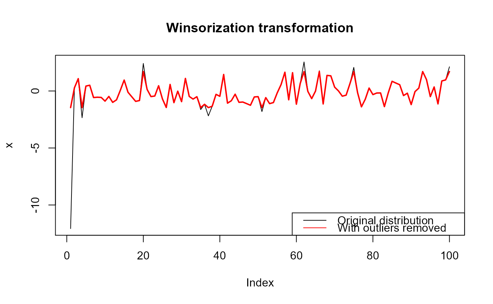

Removes extreme outliers using a winsorization transformation
Winsorization is the transformation of a distribution by limiting extreme values to reduce the effect of spurious outliers. This is done by shrinking outlying observations to the border of the main part of the distribution.
winsorize( x, min.value = NULL, max.value = NULL, p = c(0.05, 0.95), na.rm = FALSE )
| x | A numeric vector |
|---|---|
| min.value | A fixed lower bounds, all values lower than this will be replaced by this value. The default is set to the 5th-quantile of x. |
| max.value | A fixed upper bounds, all values higher than this will be replaced by this value. The default is set to the 95th-quantile of x. |
| p | A numeric vector of 2 representing the probabilities used in the quantile function. |
| na.rm | (FALSE/TRUE) should NAs be omitted? |
A transformed vector the same length as x, unless na.rm is TRUE, then x is length minus number of NA's
Dixon, W.J. (1960) Simplified Estimation from Censored Normal Samples. Annals of Mathematical Statistics. 31(2):385-391
Jeffrey S. Evans <jeffrey_evans@tnc.org>
#> [1] -1.457249338 0.277429242 1.084441177 -1.457249338 0.429124689 #> [6] 0.506055892 -0.574739960 -0.546631856 -0.564451999 -0.890037829 #> [11] -0.477192700 -0.998386445 -0.776253895 0.064458817 0.959494059 #> [16] -0.110285494 -0.511009506 -0.911195417 -0.837171680 1.709520029 #> [21] 0.134088220 -0.490685897 -0.440547872 0.459589441 -0.693720247 #> [26] -1.448204910 0.574755721 -1.023655723 -0.015138300 -0.935948601 #> [31] 1.102297546 -0.475593079 -0.709440038 -0.501258061 -1.457249338 #> [36] -1.167619262 -1.457249338 -1.340993192 -0.294293859 -0.465897540 #> [41] 1.449496265 -1.068642724 -0.855364634 -0.280623002 -0.994340076 #> [46] -0.968514318 -1.107318193 -1.251985886 -0.523828119 -0.496849957 #> [51] -1.457249338 -0.582075925 -1.108889624 -1.014962009 -0.162309524 #> [56] 0.563055819 1.647817473 -0.773353424 1.605909629 -1.157808548 #> [61] 0.656588464 1.709520029 -0.034760390 -0.669633580 -0.007604756 #> [66] 1.709520029 -1.138607737 1.367827179 1.329564791 0.336472797 #> [71] 0.006892838 -0.455468738 -0.366523933 0.648286568 1.709520029 #> [76] -0.153398412 -1.390700947 -0.723581777 0.258261762 -0.317059115 #> [81] -0.177789958 -0.169994077 -1.372301886 -0.173787170 0.850232257 #> [86] 0.697608712 0.549997351 -0.402731975 -0.191593770 -1.194527880 #> [91] -0.053158819 0.255196001 1.705964007 1.001513252 -0.495583443 #> [96] 0.355550297 -1.134608044 0.878203627 0.972916753 1.709520029legend("bottomright", legend=c("Original distribution","With outliers removed"), lty=c(1,1), col=c("black","red"))# Behavior with NA value(s) x[4] <- NA winsorize(x) # returns x with original NA's#> [1] -1.396451343 0.277429242 1.084441177 NA 0.506055892 #> [6] -0.574739960 -0.546631856 -0.564451999 -0.890037829 -0.477192700 #> [11] -0.998386445 -0.776253895 0.064458817 0.959494059 -0.110285494 #> [16] -0.511009506 -0.911195417 -0.837171680 1.713076051 0.134088220 #> [21] -0.490685897 -0.440547872 0.459589441 -0.693720247 -1.396451343 #> [26] 0.574755721 -1.023655723 -0.015138300 -0.935948601 1.102297546 #> [31] -0.475593079 -0.709440038 -0.501258061 -1.396451343 -1.167619262 #> [36] -1.396451343 -1.340993192 -0.294293859 -0.465897540 1.449496265 #> [41] -1.068642724 -0.855364634 -0.280623002 -0.994340076 -0.968514318 #> [46] -1.107318193 -1.251985886 -0.523828119 -0.496849957 -1.396451343 #> [51] -0.582075925 -1.108889624 -1.014962009 -0.162309524 0.563055819 #> [56] 1.647817473 -0.773353424 1.605909629 -1.157808548 0.656588464 #> [61] 1.713076051 -0.034760390 -0.669633580 -0.007604756 1.713076051 #> [66] -1.138607737 1.367827179 1.329564791 0.336472797 0.006892838 #> [71] -0.455468738 -0.366523933 0.648286568 1.713076051 -0.153398412 #> [76] -1.390700947 -0.723581777 0.258261762 -0.317059115 -0.177789958 #> [81] -0.169994077 -1.372301886 -0.173787170 0.850232257 0.697608712 #> [86] 0.549997351 -0.402731975 -0.191593770 -1.194527880 -0.053158819 #> [91] 0.255196001 1.705964007 1.001513252 -0.495583443 0.355550297 #> [96] -1.134608044 0.878203627 0.972916753 1.713076051winsorize(x, na.rm=TRUE) # removes NA's#> [1] -1.396451343 0.277429242 1.084441177 0.429124689 0.506055892 #> [6] -0.574739960 -0.546631856 -0.564451999 -0.890037829 -0.477192700 #> [11] -0.998386445 -0.776253895 0.064458817 0.959494059 -0.110285494 #> [16] -0.511009506 -0.911195417 -0.837171680 1.713076051 0.134088220 #> [21] -0.490685897 -0.440547872 0.459589441 -0.693720247 -1.396451343 #> [26] 0.574755721 -1.023655723 -0.015138300 -0.935948601 1.102297546 #> [31] -0.475593079 -0.709440038 -0.501258061 -1.396451343 -1.167619262 #> [36] -1.396451343 -1.340993192 -0.294293859 -0.465897540 1.449496265 #> [41] -1.068642724 -0.855364634 -0.280623002 -0.994340076 -0.968514318 #> [46] -1.107318193 -1.251985886 -0.523828119 -0.496849957 -1.396451343 #> [51] -0.582075925 -1.108889624 -1.014962009 -0.162309524 0.563055819 #> [56] 1.647817473 -0.773353424 1.605909629 -1.157808548 0.656588464 #> [61] 1.713076051 -0.034760390 -0.669633580 -0.007604756 1.713076051 #> [66] -1.138607737 1.367827179 1.329564791 0.336472797 0.006892838 #> [71] -0.455468738 -0.366523933 0.648286568 1.713076051 -0.153398412 #> [76] -1.390700947 -0.723581777 0.258261762 -0.317059115 -0.177789958 #> [81] -0.169994077 -1.372301886 -0.173787170 0.850232257 0.697608712 #> [86] 0.549997351 -0.402731975 -0.191593770 -1.194527880 -0.053158819 #> [91] 0.255196001 1.705964007 1.001513252 -0.495583443 0.355550297 #> [96] -1.134608044 0.878203627 0.972916753 1.713076051